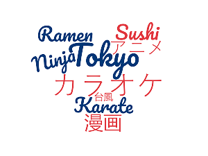

Introdução | Localização | Multimedia | Informação | Quizz | Comentarios | Home
Tóquio, oficialmente a Metrópole de Tóquio (東京 都, Tōkyō-to ) , é a capital e a prefeitura mais populosa do Japão .
Localizada na ponta da Baía de Tóquio , a prefeitura faz parte da região de Kantō na costa central do Pacífico daprincipal ilha japonesa de Honshu .
Tóquio é o centro político e econômico do país, bem como a residência do imperador do Japão e do governo nacional.
Em 2021, a prefeitura tinha uma população estimada de 9,273,236. A área da Grande Tóquio é a área metropolitana mais populosa do mundo, com mais de 37.393 milhões de residentes em 2020.
Spider Man (Zoom out to see) em Tokyo
✨✨✨✨✨✨✨✨✨⬜✨✨✨✨✨✨✨✨✨
✨✨✨✨✨✨✨✨✨⬜✨✨✨✨✨✨✨✨✨
✨✨✨✨✨✨✨✨✨⬜✨✨✨✨✨✨✨✨✨
✨✨✨✨✨✨✨✨✨⬜✨✨✨✨✨✨✨✨✨
✨✨✨✨✨✨✨✨✨⬜✨✨✨✨✨✨✨✨✨
✨✨✨✨✨✨✨✨✨⬜✨✨✨✨✨✨✨✨✨
✨✨✨✨✨✨✨✨✨⬜✨✨✨✨✨✨✨✨✨
✨✨✨✨✨✨✨✨✨⬜✨✨✨✨✨✨✨✨✨
✨✨✨✨✨✨✨⬛️⬛️⬜⬛️⬛️✨✨✨✨✨✨✨
✨✨✨✨✨✨✨⬛️🅰️⬜🅰️⬛️✨✨✨✨✨✨✨
✨✨✨✨✨✨⬛️🅰️🅰️⬜🅰️🅰️⬛️✨✨✨✨✨✨
✨✨✨⬛️⬛️⬛️🅰️🅰️🅰️⬜🅰️🅰️🅰️⬛️⬛️⬛️✨✨✨
✨⬛️⬛️🚹🚹🚹🚹🅰️🅰️⬜🅰️🅰️🚹🚹🚹🚹⬛️⬛️✨
⬛️🚹🚹🚹🚹🚹🚹⬛️⬛️⬜⬛️⬛️🚹🚹🚹🚹🚹🚹⬛️
⬛️🚹🚹🚹🚹🚹⬛️✨✨⬜✨✨⬛️🚹🚹🚹🚹🚹⬛️
✨⬛️🚹🚹🚹🚹🚹⬛️⬛️⬜⬛️⬛️🚹🚹🚹🚹🚹⬛️✨
✨✨⬛️🚹🚹🚹🚹🚹🚹⬜🚹🚹🚹🚹🚹🚹⬛️✨✨
✨✨✨⬛️🚹🚹🚹🚹🚹⬜🚹🚹🚹🚹🚹⬛️✨✨✨
✨✨✨✨⬛️⬛️⬛️⬛️⬛️⬜⬛️⬛️⬛️⬛️⬛️✨✨✨✨
✨✨✨✨⬛️🅰️🅰️🅰️⬛️⬜⬛️🅰️🅰️🅰️⬛️✨✨✨✨
✨✨✨⬛️🅰️🅰️🅰️🅰️⬛️🅰️⬛️🅰️🅰️🅰️🅰️⬛️✨✨✨
✨✨⬛️🅰️🅰️🅰️🅰️🅰️⬛️🅰️⬛️🅰️🅰️🅰️🅰️🅰️⬛️✨✨
✨✨⬛️🅰️🅰️🅰️⬛️⬛️🅰️🅰️🅰️⬛️⬛️🅰️🅰️🅰️⬛️✨✨
✨⬛️🅰️🅰️🚹⬛️🚹🅰️🅰️🅰️🅰️🅰️🚹⬛️🚹🅰️🅰️⬛️✨
⬛️🅰️🅰️🚹⬛️🚹🅰️⬛️⬛️⬛️⬛️⬛️🅰️🚹⬛️🚹🅰️🅰️⬛️
⬛️🅰️🚹⬛️🅰️🅰️⬛️🅰️🅰️🅰️🅰️🅰️⬛️🅰️🅰️⬛️🚹🅰️⬛️
⬛️🅰️⬛️🅰️🅰️⬛️🅰️🅰️🅰️🅰️🅰️🅰️🅰️⬛️🅰️🅰️⬛️🅰️⬛️
⬛️🅰️⬛️🅰️⬛️🅰️🅰️🅰️🅰️🅰️🅰️🅰️🅰️🅰️⬛️🅰️⬛️🅰️⬛️
✨⬛️⬛️⬛️⬛️🅰️🅰️🅰️🅰️🅰️🅰️🅰️🅰️🅰️⬛️⬛️⬛️⬛️✨
✨✨✨✨⬛️🅰️🅰️⬛️⬛️🅰️⬛️⬛️🅰️🅰️⬛️✨✨✨✨
✨✨✨✨⬛️🅰️⬛️⬜⬛️🅰️⬛️⬜⬛️🅰️⬛️✨✨✨✨
✨✨✨✨⬛️🅰️⬛️⬜⬛️🅰️⬛️⬜⬛️🅰️⬛️✨✨✨✨
✨✨⬛️⬛️⬛️🅰️⬛️⬛️⬛️🅰️⬛️⬛️⬛️🅰️⬛️⬛️⬛️✨✨
✨⬛️🈚🈚🈚🅰️⬛️🅰️🅰️🅰️🅰️🅰️⬛️🅰️🈚🈚🈚⬛️✨
✨✨⬛️⬛️🈚🈚🈚🈚🈚🈚🈚🈚🈚🈚🈚⬛️✨✨✨
✨✨✨✨⬛️🈚🈚🈚🈚🈚🈚🈚🈚🈚⬛️✨✨✨✨
✨✨✨✨✨⬛️🈚🈚🈚🈚🈚🈚🈚⬛️✨✨✨✨✨
✨✨✨✨✨✨⬛️⬛️🈚🈚🈚⬛️✨✨✨✨✨✨✨
✨✨✨✨✨✨✨✨⬛️🈚⬛️✨✨✨✨✨✨✨✨
Era uma vez, um cão tocava piano e falava Alemão.🐶👍
